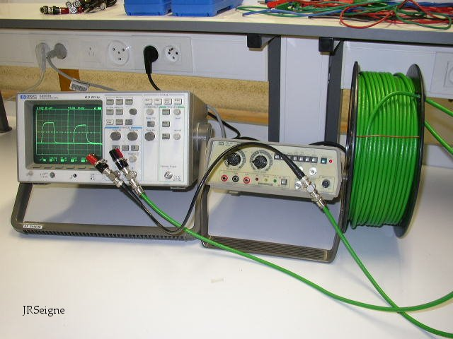
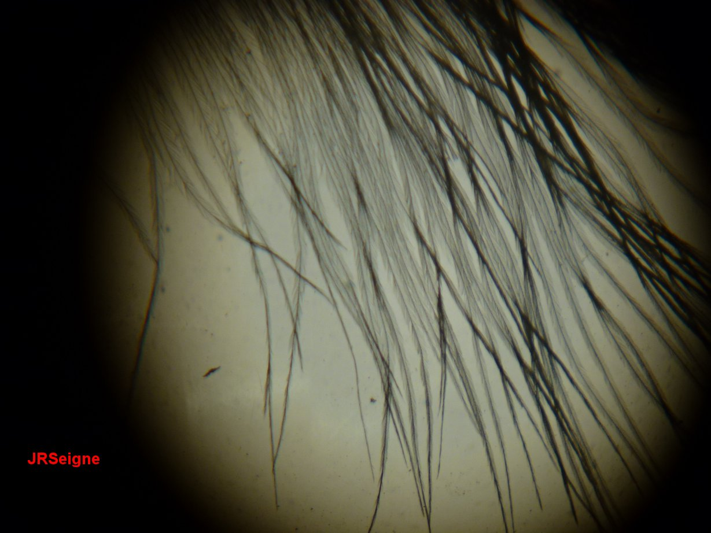

Sciences Physiques en MP*, Lycée
Clemenceau Nantes
Travaux Pratiques

L'information,
ici sous forme
d'impulsion électrique de forme créneau, se propage à une vitesse très
élevée dans un câble coaxial. Si on utilise une impulsion courte de
durée inférieure à 100 nanosecondes (ns), on peut mettre en évidence
sur l'oscilloscope sa durée de propagation dans le câble vert dont la
longueur est d'environ 50 m par mesure de l'écart temporel séparant
l'arrivée des deux impulsions. Celui-ci de l'ordre de 250 ns
est
facilement mis en évidence. La vitesse est de l'ordre de 200 000 km.s-1,
c'est aussi la vitesse de propagation des ondes électromagnétiques dans
l'isolant du câble coaxial.
Ce logiciel a été créé par M. Jean-Marie Biansan, professeur au lycée
Lapeyrouse d'Albi (81). Il utilise des simulations de type Monte-Carlo pour le calcul des incertitudes.
Sur cette vidéo, on peut observer la chute d'une bouteille d'eau
colorée percée d'un petit trou à sa base. Lorsque l'on tient la
bouteille, de l'eau jaillit au niveau du petit trou. L'eau sort de la
bouteille avec une vitesse à peu près horizontale. La trajectoire de
l'eau s'approche d'une parabole comme c'est le cas dans le cas idéal
d'une chute libre dans le champ de pesanteur uniforme. Au moment où on
lâche la bouteille, l'eau s'arrête de sortir de la bouteille. On peut
donner une explication simple : l'eau et la bouteille en plastique
subissent alors la même accélération (g le champ de pesanteur). Ils
vont
avoir tous les deux le même mouvement. Il n'y a plus aucune raison pour
que l'eau ait un mouvement différent de la bouteille à partir du moment
où ils possèdent tous les deux la même vitesse initiale, ce que l'on
peut considérer comme réalisé (ou quasiment). On peut aussi évoquer la
notion de référentiel non galiléen pour expliquer le fait que l'eau ne
s'écoule plus de la bouteille. En effet, lorsqu'on lâche la bouteille,
elle constitue un référentiel non galiléen d'accélération g. Si l'on
étudie le mouvement de l'eau, on se place alors dans le référentiel de
bouteille. L'eau subit son poids et la force d'inertie d'entraînement
qui compense justement le poids puisque l'accélération d'entraînement
est g, accélération de la bouteille. Il n'y a donc plus de force pour
donner un mouvement à l'eau par rapport à la bouteille. On peut aussi
réaliser cette expérience en lançant la bouteille en l'air. À partir du
moment où la seule force subie est le poids, l'eau ne s'écoule plus par
le trou. Ceci se produit aussi bien dans la phase de montée de la
bouteille que dans la phase de descente mais cela est beaucoup plus
difficile à filmer...
Sur cette vidéo, on peut observer les
franges rectilignes de l'interféromètre de Michelson réglé en coin
d'air et éclairé en lumière blanche. La figure observée résulte de la
superposition de tous les systèmes de franges associés à toutes les
longueurs d'onde présentes dans le spectre (continu) de la source de
lumière blanche utilisée. Les déformations de cette figure
d'interférences sont la conséquence du passage d'un courant d'air chaud
sur le parcours des rayons lumineux (il suffit d'expirer un peu d'air
de vos poumons pour obtenir cet effet). L'air chaud possède un indice
de réfraction très légèrement inférieur à celui de l'air ambiant, cela
suffit pour modifier le chemin optique parcouru sur une des deux voies
(là où on souffle) de l'interféromètre par rapport à l'autre. La
différence de marche est suffisamment modifiée pour provoquer les
effets que vous pouvez voir. Cette vidéo a été filmée en TP par le
binôme N. F.-C. et X. L., novembre 2017, MP Clemenceau Nantes.

On éclaire avec une source
de lumière blanche intense et convergente une petite plume d'oiseau. On
forme ensuite sur un écran (ou un dépoli pour prendre la photographie
depuis derrière l'objet) l'image de cette plume grâce à une lentille
convergente. On obtient alors l'image classique de gauche où les fibres
de la plume apparaissent en noir car elles empêchent la lumière
incidente
de les traverser. En plaçant un petit obstacle en forme de disque
(pièce de monnaie) au niveau du plan de convergence de la lumière
incidente, on supprime de l'image l'essentiel de la lumière directe. On
observe alors les fibres de la plume claires sur un fond plutôt foncé.
C'est le phénomène de strioscopie. Les fibres apparaissent claires du
fait de la lumière qu'elles diffractent. Cette lumière diffractée n'est
pas perceptible si on ne supprime pas la lumière incidente.